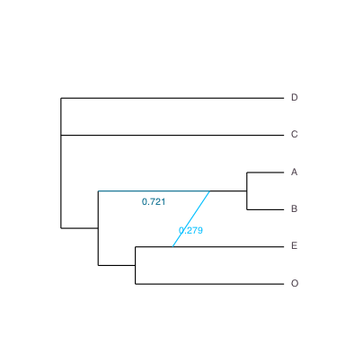

Candidate Networks
Optimizing parameters for a given network
For a given network topology, we can optimize the branch lengths and inheritance probabilities (γ) with the pseudolikelihood. This is useful if we have a few candidate networks to compare. Each network can be optimized individually, and the network with the best pseudolikelihood can be chosen.
The score being optimized is the pseudo-deviance, i.e. the negative log pseudo-likelihood up to an additive constant (the lower the better).
Following our example in Getting a Network, we can optimize parameters on the true network (the one originally used to simulate the data):
julia> truenet = readTopology("((((D:0.4,C:0.4):4.8,((A:0.8,B:0.8):2.2)#H1:2.2::0.7):4.0,(#H1:0::0.3,E:3.0):6.2):2.0,O:11.2);"); julia> net1alt = topologyMaxQPseudolik!(truenet, raxmlCF); julia> writeTopology(net1alt, round=true) "(D,C,(((A,B):0.987)#H1:8.376::0.721,((#H1:0.0::0.279,E):1.287,O):1.181):7.615);" julia> net1alt.loglik # pseudo deviance, actually 29.94130186108919
plot(net1alt, showGamma=true)

We get a score of 29.941, which is comparable to the score of the SNaQ network (net1: 28.315), especially compared to the score of the best tree (net0: 53.532). This begs the question: is the true network within the "range" of uncertainty? We can run a Bootstrap analysis to measure uncertainty in our network inference.
For a more thorough optimization, we may increase the requirements before the search stops (but the optimization will take longer). It makes no difference on this small data set.
net1par = topologyMaxQPseudolik!(truenet, raxmlCF, ftolRel=1e-10, xtolAbs=1e-10) net1par.loglik
Network Score with no optimization
For a network with given branch lengths and γ heritabilies, we can compute the pseudolikelihood with:
julia> topologyQPseudolik!(truenet,raxmlCF); julia> truenet.loglik 153.5310295393005
This function is not maximizing the pseudolikelihood, it is simply computing the pseudolikelihood (or deviance) for the given branch lengths and probabilities of inheritance. At the moment, both of these functions require that the given network is of level 1 (cycles don't overlap).